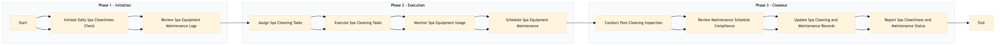

| Role | Steps |
|---|---|
| Executive Housekeeper | 1.1 3.1 3.4 |
| Spa Manager | 1.2 2.4 3.2 |
| Housekeeping Supervisor | 2.1 3.3 |
| Housekeeping Staff | 2.2 |
| Step | Name | Role | System | Input | Output | KPI | Dec? | Exc? | Pain Point / Risk |
|---|---|---|---|---|---|---|---|---|---|
| 1.1 | Initiate Daily Spa Cleanliness Check | Executive Housekeeper | Oracle OPERA Cloud | Daily cleaning schedule | Cleanliness check report | Less than 30 minutes | N | Y | Inconsistent adherence to cleaning schedules. |
| 1.2 | Review Spa Equipment Maintenance Logs | Spa Manager | Oracle OPERA Cloud | Maintenance logs | Equipment maintenance report | Less than 15 minutes | N | Y | Overlooking critical equipment maintenance needs. |
| 2.1 | Assign Spa Cleaning Tasks | Housekeeping Supervisor | Oracle OPERA Cloud | Cleanliness check report | Task assignments to Housekeeping Staff | Less than 5 minutes | N | Y | Inefficient task assignment leading to delays. |
| 2.2 | Execute Spa Cleaning Tasks | Housekeeping Staff | Oracle OPERA Cloud | Task assignments | Completed cleaning tasks | Less than 45 minutes per task | N | Y | Poor execution of cleaning protocols. |
| 2.3 | Monitor Spa Equipment Usage | Spa Attendant | Oracle OPERA Cloud | Guest usage data | Equipment usage report | Less than 10 minutes | N | Y | Inaccurate tracking of equipment usage. |
| 2.4 | Schedule Spa Equipment Maintenance | Spa Manager | Oracle OPERA Cloud | Equipment maintenance report | Maintenance schedule updates | Less than 10 minutes | N | Y | Delayed scheduling of equipment maintenance. |
| 3.1 | Conduct Post-Cleaning Inspection | Executive Housekeeper | Oracle OPERA Cloud | Completed cleaning tasks | Inspection report | Less than 20 minutes | Y | Y | Missed issues during inspections. |
| 3.2 | Review Maintenance Schedule Compliance | Spa Manager | Oracle OPERA Cloud | Maintenance schedule updates | Compliance report | Less than 10 minutes | Y | Y | Non-compliance with maintenance schedules. |
| 3.3 | Update Spa Cleaning and Maintenance Records | Housekeeping Supervisor | Oracle OPERA Cloud | Inspection report, compliance report | Updated records in Oracle OPERA Cloud | Less than 15 minutes | N | Y | Inaccurate record-keeping leading to errors. |
| 3.4 | Report Spa Cleanliness and Maintenance Status | Executive Housekeeper, Spa Manager | Oracle OPERA Cloud | Updated records | Daily status report to Front Desk | Less than 5 minutes | N | Y | Inconsistent reporting of spa conditions. |
This process ensures that spa cleanliness and equipment maintenance are consistently high at a Marriott full-service hotel, enhancing guest satisfaction and operational efficiency.